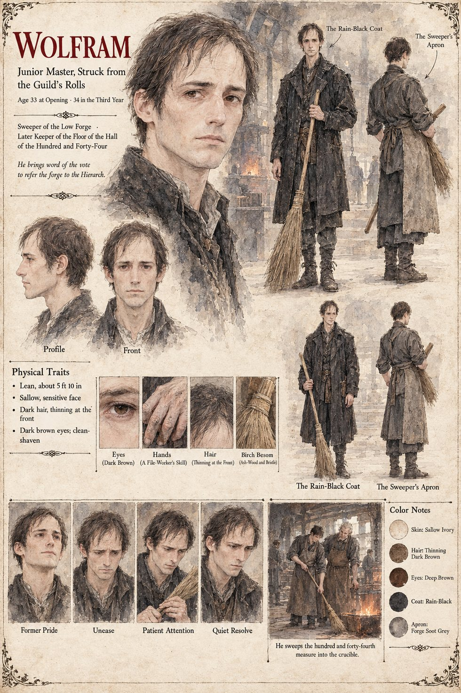

Wolfram
Junior master of the Hammer-Oath, struck from the rolls · sweeper of the Low Forge, later Keeper of the Floor of the Hall of the Hundred and Forty-Four · 33 at the opening, 34 in the war
A lean, sallow master of seven years' standing, with a mother in the Middle Town and a debt to a cloth-merchant, who was Ansbert's friend in the years when both of them were journeymen under old Ruodhard, before the Guild made one of them a master and the other a laughing-stock. On the second night of Averin, the night after the Proof of the Low Forge sword, he puts down a coin for his beer at the Three Sheaves and goes out alone into the rain, and does not go home. He does not knock at the Low Forge; he stands until Lantfrid opens the door, and sits at Hiltrude's scrubbed board as a man sits who has made up his mind to be thrown out. The eleven masters, he says, have voted seven to four, with the Guildmaster, Gundobad Rotger, refusing to cast his own, to lay the matter of the Low Forge before the Hierarch as a case of sorcery. He voted against, and wishes that to be understood; he has also learned in a long evening that a conviction held by one man against seven is a form of private grief rather than a vote. He has come to ask for work. He will sweep the floor.
Sigebert Marl strikes him from the rolls with a single stroke of the pen on the first of Brayen, and he writes to his mother that he has been swept to better employment and learns, in the loft of the Low Forge, to sweep. In the war the apprentice Lantfrid, a boy of sixteen, teaches the master of thirty-four the one thing a master does not know: the elbow, the slant, the bristles trailing, the long lazy sweep that must not be hurried. He learns it badly and then well, and remembers for thirty-one years a tall thin boy at the mouth of the loft with his hands on his hips, explaining that it was not the sweeping but the order. After the burying, with his sallow face quite empty, he comes down from the loft and holds out his hand for the besom, and sweeps the hundred and forty-fourth measure, level as half an egg-shell, left to right across the anvil and into the open mouth of the crucible. The Queen gives him the office of Keeper of the Floor of the Hall of the Hundred and Forty-Four, at a penny a day, and he sweeps it for thirty-one years, from left to right with the besom under his right elbow; on the first of every month, when the Hall is empty, he takes the same broom to a small mound in a yard at the edge of a market and sweeps that. What he brings out each dawn in a tin pan is what Marl sells as the Sable Dust. At dawn after the burying he is one of five hands laid on the cold face of the anvil, beside Ansbert, Hiltrude, Tomobe no Higaide and a woman in a plain grey cloak, with a space left at the end of the anvil, on the left, where a long thin hand with a cowlick over it would have been.
The manuscript gives his age, his debt, his mother and his lean sallow face; the sheet's 5 ft 10 in, dark hair thinning at the front, dark brown eyes, clean-shaven face, rain-black coat, forge-soot grey apron and birch besom are its own, as is the file-worker's skill in his hands (the manuscript gives him a good hand with a file). Its captions give him as Junior Master, Struck from the Guild's Rolls and Sweeper of the Low Forge, with the panel He sweeps the hundred and forty-fourth measure into the crucible; its expression panels run Former Pride, Unease, Patient Attention and Quiet Resolve.
“it was not the sweeping but the order”
Appears In

Related Subjects


Related Records

In the Proof-Hall the empty sack hangs on its iron crook above the black oak block, turning in the draught from a doorway with no door, while a hundred and forty-three knights sit in the spiral of benches with their swords in their hands and the hundred and forty-fourth place stands empty on the flagstones; Hiltrude holds out her empty hands at the threshold, Wolfram begins his first long sweep of the floor, and Higaide stands at the back with his hands in his sleeves.